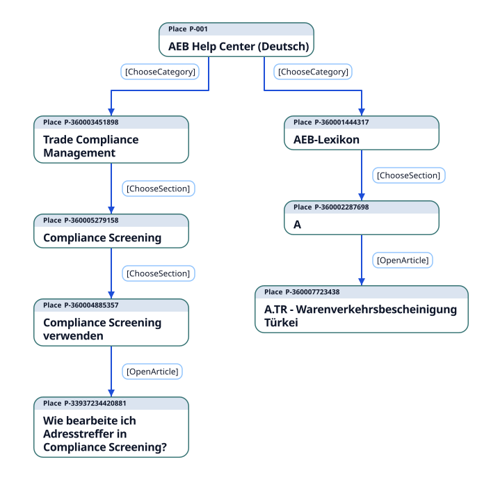
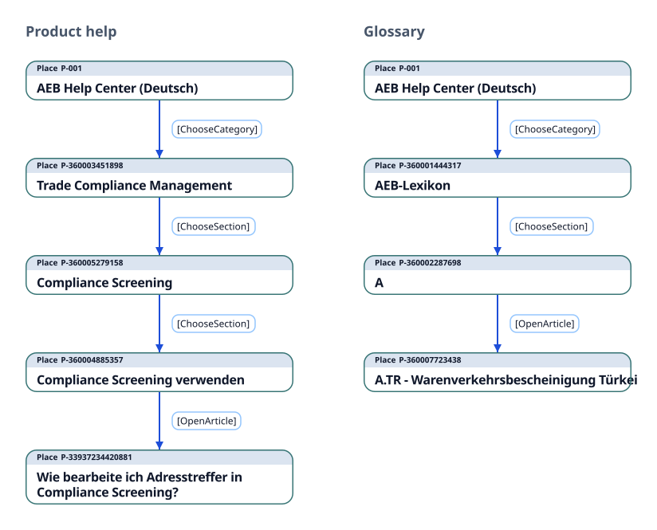
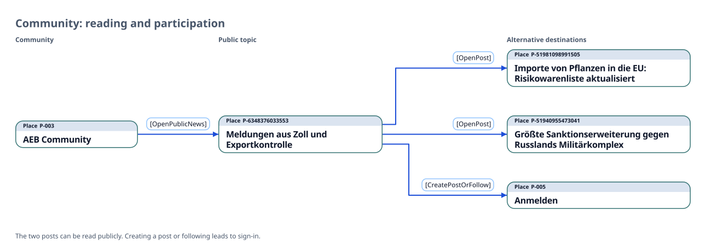

AEB Help Center · Places flow
Paths through the Help Center
Two Figure 2 compositions show how visitors find an article. Figure 8 shows the choices available in the Community.
Figure 2 · One shared start
Home branches into product help and the glossary. Each route then continues downward to an article.

Figure 2 · Previous two-route version
Follow product help or browse the glossary. Each arrow shows the event that opens the next page.

Figure 8 · Community reading and participation
Enter a Community topic, then choose a public post or sign in to participate.
